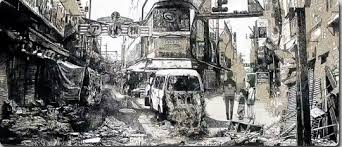
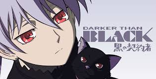
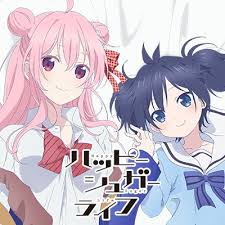
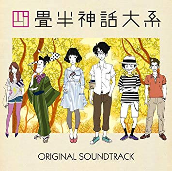

this anime is like Madoka Magika.normally it is called Mahousyoujyo anime.at first it will make u to cry because story is so dark from the middle.main actors are 12~15 years old and they face cruel truth but they dont give up untill end and they fight enemys as hero. so cool i really like this word "hero" just watch :3

this anime is based about Earthquake.recently it often happenes in japan so i watched this and i was really moved by this anime.i cant watch this anime without tears and this anime can tell us how much important life and how much scarry Earth quake i think this anime should be added education of Earth quake in japan school

main actors are so good and story too.this anime made in 2007 but i like this anime better than animes that made in recent years.it doesn't fade like classic animes

so do u like Yandere? yes? OK i will recomend this anime.its scarry a bit but at last u will know what is love and BGM also good on this anime.ED and OP too.if u like those just go watch :3

this anime about college life.main actor passed famous college but he cant enjoy his campus life XD cus he has proud that is so bother.acutuaaly like me :3 if u are college student i recomend this anime. it may trigger that cahnge ur college life